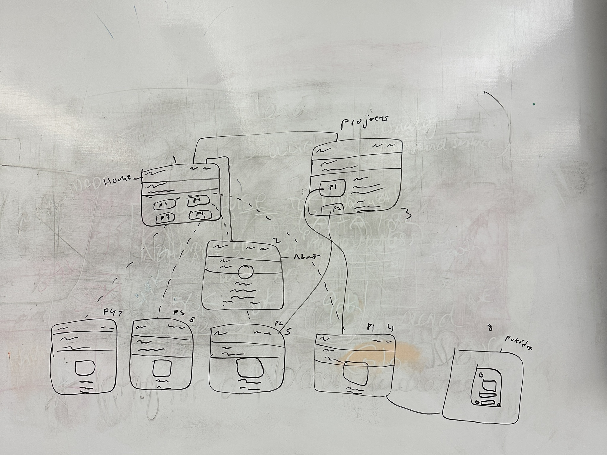

Project Details
- Date Completed: Nov. 2025
- Project Role: UI/UX Designer and Front-End Developer
- Software Used: VS Code (HTML5 & CSS3), Figma (Wireframing/Prototyping), Procreate, Adobe Photoshop & Adobe Illustrator (Icons & Asset Creation)
- Type of Work: Website
- Nature of Work: Personal Portfolio Website
- Time to Complete: 2 weeks
Context
After creating the initial version of this website, the goal for V2.0 was to implement a high-quality, professional, and scalable foundation. The previous single-page design lacked the necessary Information Architecture and visual polish required for a serious portfolio.
Design
I began by designing the layouts of the different pages with pencil and paper to gain a visual sense of how they should appear. Then I created a wireframe that served as my site’s informational architecture, to determine how all the pages fit together and, more importantly, to decide how many templates I needed to develop. Once I had an idea of how many pages and how they fit together via my physical diagrams, I went into Figma and created a digital prototype. Then I wrote the copy (text like this) and gathered/created the other necessary assets. This entailed tasks such as using Procreate to create custom icons and editing images in Photoshop and Illustrator.
Development
For development, I consciously built the site using Semantic HTML5 and Custom CSS3. This allowed for leaner code, faster performance, and precise control over every design element. I utilized Flexbox for layout and navigation to ensure robust responsiveness across all screen sizes. This development approach ultimately led to a more maintainable and performant site than the initial prototype suggested, leading to several changes, including the integration of custom, Susan Kare-inspired icons for navigation.
I eliminated the dedicated "Projects" gallery page, as the home page and individual project pages already provide clear, redundant linking. This streamlined the site's information architecture. To drastically improve readability and User Experience (UX) for long-form content, I implemented a strict CSS max-width property, capping the line length for copy at 600 pixels on the About page and 800 pixels on Project pages, a strategic choice for optimal eye-tracking.
Outcome
The outcome is a clean, responsive, and professionally designed portfolio that serves as a live case study of my front-end and visual design capabilities. By controlling every line of code, the V2.0 site is lightweight and accessible. It provides a polished platform for showcasing future projects and growth. I have included photos below of different stages of the design process.

